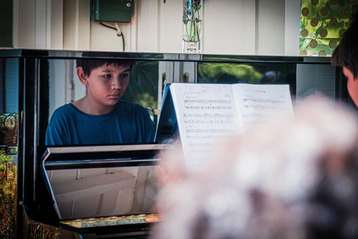
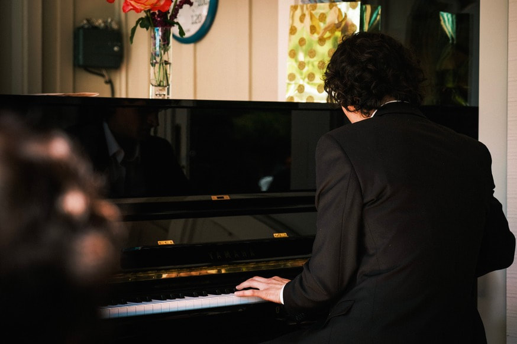

Technique, expression, and a strong foundation.
Classical instruction can range from first pieces to advanced repertoire and accredited exam preparation. Students work on technique, reading, phrasing, dynamics, expression, repertoire, and musical understanding.
Classical piano is also a practical foundation for other styles because it develops coordination, notation, listening, discipline, and the ability to shape a musical phrase.


Learn how music works, then make it your own.
Jazz lessons emphasize listening, scales, chords, arpeggios, swing, syncopation, rhythm, harmony, and improvisation. Students learn how notes work together so they can create as well as perform.
Jazz can be studied by beginners who want a more exploratory entry point or by advanced players working on voicings, theory, sight-reading, and improvisation.
Songs you know, taught with real musicianship.
Contemporary music can be an accessible entry point for beginners without sacrificing a strong foundation. Students learn recognizable songs while developing chords, patterns, rhythm, theory, and practical keyboard skills.
Lessons can also include blues, ragtime, wedding pieces, accompaniment, and performance repertoire chosen around the student’s goals.

Music theory supports every style.
All instructors are trained to communicate core concepts such as rhythm, harmony, and melody. Pitch, expression, identification, and notation are developed through lessons and exercises appropriate for each student.
Music theory translates into better playing, better practicing, better improvising, better reading, and nearly every other kind of advancement in musicianship. The goal is for students to understand the music they play, not simply reproduce notes.
Recitals and performance
Students can work toward recitals and other performance goals. Performing gives developing musicians a concrete goal, builds confidence, and creates a way for students to share music that reflects who they are.
Find a lesson style that keeps you moving forward.
Tell us what you want to play, where you are starting, and what you hope to accomplish. We will help match the right style and teacher to your goals.